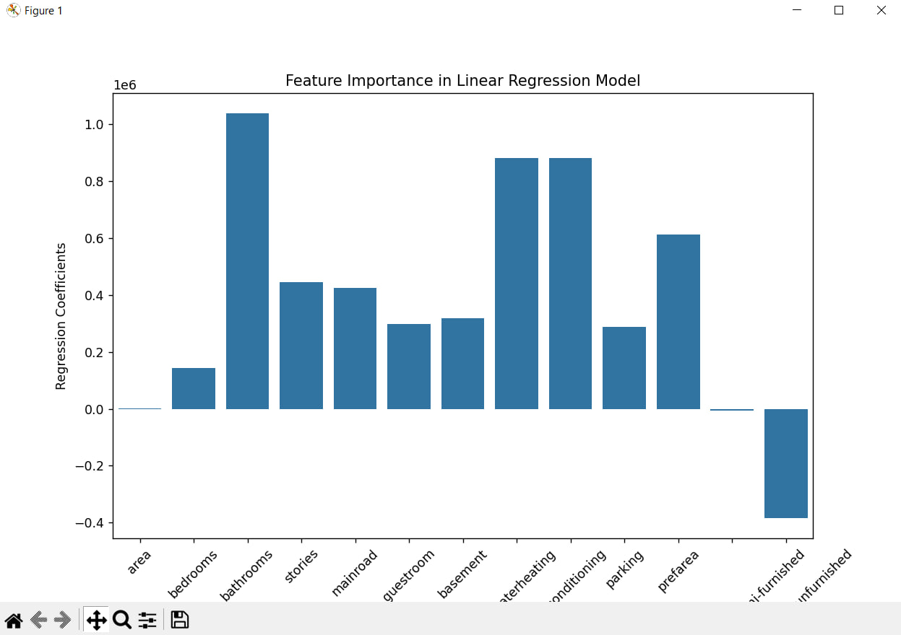
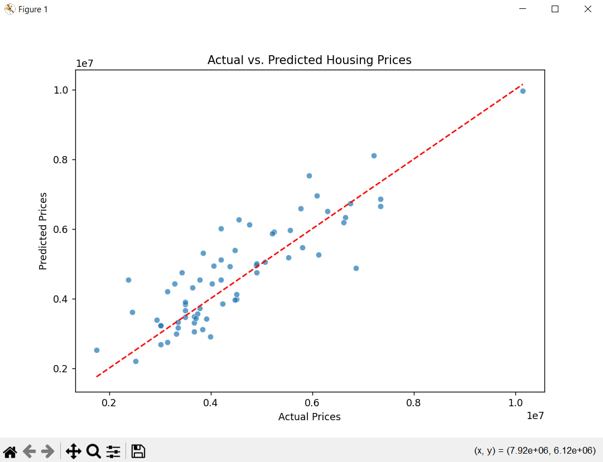

Project Overview
This project focuses on predicting housing prices using a linear regression model. The dataset includes various housing attributes, which are preprocessed by encoding categorical variables and mapping binary features to numerical values. Recursive Feature Elimination (RFE) is applied to select the 13 most significant predictors. The model is trained on an 88% training set and evaluated using the R² score on a 12% test set. Visualizations include a bar plot showing feature importance and a scatter plot comparing actual vs. predicted prices. The project demonstrates a structured approach to housing price estimation with feature selection and interpretability.
Visuals
Below are some visual representations of the data and model performance:
 Code Implementation
import numpy as np
import pandas as pd
import matplotlib.pyplot as plt
import seaborn as sns
from sklearn.model_selection import train_test_split
from sklearn.linear_model import LinearRegression
from sklearn.feature_selection import RFE
from sklearn.metrics import r2_score
excdata = pd.read_csv("Housing.csv")
featlist = ['mainroad', 'guestroom', 'basement', 'hotwaterheating', 'airconditioning', 'prefarea']
def binary_map(i):
return i.map({'yes': 1, "no": 0})
excdata[featlist] = excdata[featlist].apply(binary_map)
excdata = pd.get_dummies(excdata, columns=['furnishingstatus'], drop_first=True)
X = excdata.drop('price', axis=1)
y = excdata['price']
X_train, X_test, y_train, ground_truth = train_test_split(X, y, train_size=0.88, test_size=0.12, random_state=17)
repr = LinearRegression()
selector = RFE(repr, n_features_to_select=13)
selector = selector.fit(X_train, y_train)
chosen_features = X_train.columns[selector.support_]
repr.fit(X_train[chosen_features], y_train)
estimated_label = repr.predict(X_test[chosen_features])
accuracy = r2_score(ground_truth, estimated_label)
print(f'Accuracy: {accuracy * 100:.2f}%')
plt.figure(figsize=(10, 5))
sns.barplot(x=chosen_features, y=repr.coef_)
plt.xticks(rotation=45)
plt.xlabel("Selected Features")
plt.ylabel("Regression Coefficients")
plt.title("Feature Importance in Linear Regression Model")
plt.show()
plt.figure(figsize=(8, 6))
sns.scatterplot(x=ground_truth, y=estimated_label, alpha=0.7)
plt.plot([min(ground_truth), max(ground_truth)], [min(ground_truth), max(ground_truth)], color='red', linestyle='--')
plt.xlabel("Actual Prices")
plt.ylabel("Predicted Prices")
plt.title("Actual vs. Predicted Housing Prices")
plt.show()
Skills Demonstrated
- Data preprocessing by encoding categorical variables and mapping binary features to numbers.
- Feature selection using Recursive Feature Elimination.
- Building and training a Linear Regression model to predict housing prices.
- Evaluating model performance using the R² score.
- Visualizing data with bar plots for feature importance and scatter plots for actual vs. predicted prices.
- Using Python libraries such as NumPy, Pandas, Matplotlib, Seaborn, and Scikit-Learn for data analysis and machine learning.